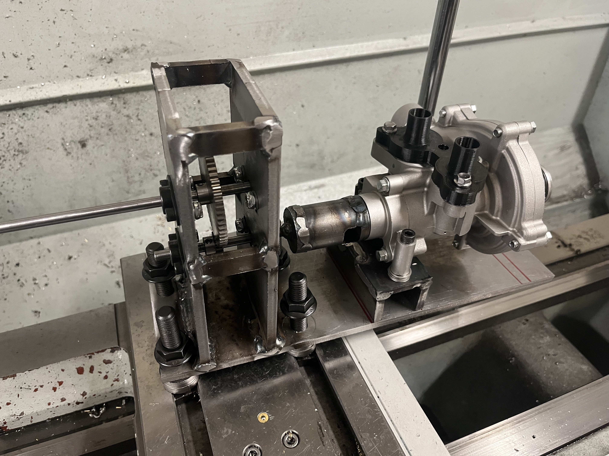

Mechanical engineering portfolio
Michael D. Hawk
Mechanical Engineering Student · Kansas State University · May 2027 Graduate
Focused on design, electrical and systems testing, fabrication, and continuous improvement.
Relevant experience
Hands-on engineering and operational responsibility.
Engine Manufacturing Engineering Intern - Component Repair
GE Aerospace
Strother Field, KS · May 2026 – August 2026- Designed, manufactured, and validated tooling and fixtures for aircraft engine component repair operations.
- Programmed CKT1175 high-voltage tester from customer wiring diagrams to implement 32 CF34-10 wiring harness testing processes.
- Developed Excel tools using SAP and Spotfire to monitor 3,500+ piece parts and site KPIs.
- Participated in engine test operations including leak checks, balancing, and throttling.
Engineering Intern - Continuous Improvement
Stryten Energy
Salina, KS · May 2025 – August 2025- Performed daily Gemba Walks and identified areas needing improvement.
- Conducted plant-wide time studies and used bottleneck analysis to improve productivity by 4%.
- Earned A3 Certification while completing three projects focused on waste, downtime, and scrap reduction.
Securities Associate
Smoky Hill Financial Group
Salina, KS · August 2023 – Current- Manage investment transactions and portfolio rebalancing using LPL Financial software.
- Analyzed and sorted 2,000+ finance accounts for improved efficiency.
- Created detailed Microsoft Excel spreadsheets for streamlined bookkeeping.
Engine Understudy
Powercat Motorsports
Manhattan, KS · August 2025 – Current- Help design, build, and test for Formula SAE.
- Completed research for the stock oil pump to validate data for new design.
Selections Committee Member
Steel Ring Engineering Honor Society
Manhattan, KS · March 2026 – Current- In charge of selecting 2027 Steel Ring Cohort.
- Set up and tear down of K-State Engineering Open House and Banquet.
Projects
Engineering Projects

May 2026 – August 2026
High-Voltage Wiring Harness Testing
Analyzed customer wiring diagrams and wrote 32 automated CKT1175 programs for CF34-10 harness testing.

May 2026 – August 2026
Engine Test and Inspection
Supported static and dynamic throttling, leak checks, dry and wet runs, balancing, documentation, and data collection.

May 2026 – August 2026
Tooling & Fixture Design and Manufacturing
Designed and manufactured five fixtures for production operations, completing the design, test, and build process.

May 2026 – August 2026
KPI / Materials Excel Tools
Built formulas and macros using SAP and Spotfire data to track WIP, throughput, shortages, inbound-outbound parts, and defense TAT drivers.

May 2026 – August 2026
Component Repair Manual Instructions
Authored four certified repair procedures from customer engine manuals and helped correct manual discrepancies with repair engineers.

May 2026 – August 2026
Dry Ice Shipment Tracking
Tracked and weighed dry ice shipments, identifying more than $1,000 in excess weekly waste.


September 2025 – May 2026
Stock Oil Pump Flow Rate Testing
Designed and fabricated a gearbox to collect FSAE stock oil pump data and used fluid dynamics calculations to support new pump design.
View Presentation
September 2025 – December 2025
Knock Reduction Research
Studied fuel and compression ratios to identify a power-focused combination that reduced engine knock risk.

June 2025 – August 2025
Maintenance Process Improvement
Connected Leading2Lean to individual machines so operators and supervisors could dispatch maintenance faster, reducing possible downtime by 30%.

July 2025 – August 2025
Battery Contamination Reduction
Designed and fabricated stand tubes to reduce charging-process flooding and contributed to 43% wet battery scrap savings.

May 2025 – July 2025
Plastic Waste Reduction
Implemented baling, weighing, recycling, and operator work instructions to reduce landfill waste by 54,000 pounds yearly.
Education
B.S. Mechanical Engineering · 3.76 GPA
Kansas State University
Manhattan, KS · August 2025 – May 2027
Fort Hays State University
Hays, KS · August 2023 – May 2025
Skills
Technical tools and engineering capabilities.
Computer Skills
MATLAB, Python, Microsoft Excel, Word, PowerPoint, Teams, AutoCAD, Inventor, SolidWorks, L2L, ClientWorks, Zapier, Redtail CRM, LabVIEW, SAP, Spotfire
Technical Skills
Manufacturing, machining, design, fabrication, circuitry, A3, 5S, Kaizen, time studies, Lean Six Sigma, bottleneck analysis, data analysis, rapid prototyping, data automation, propulsion systems, GD&T, electrical/systems test and inspection, wiring diagrams, programming, FEA
Involvement & awards
Leadership, service, and recognition.
Involvement
Selections Committee Member, Steel Ring Engineering Honor Society · Powercat Motorsports Engine Understudy · Rudd Scholar · National Honor Society Secretary
Awards / Certifications
Dean’s Honor Roll · Rudd Scholarship · 2025 Outstanding Scholars Award for Excellence · A3 Certification